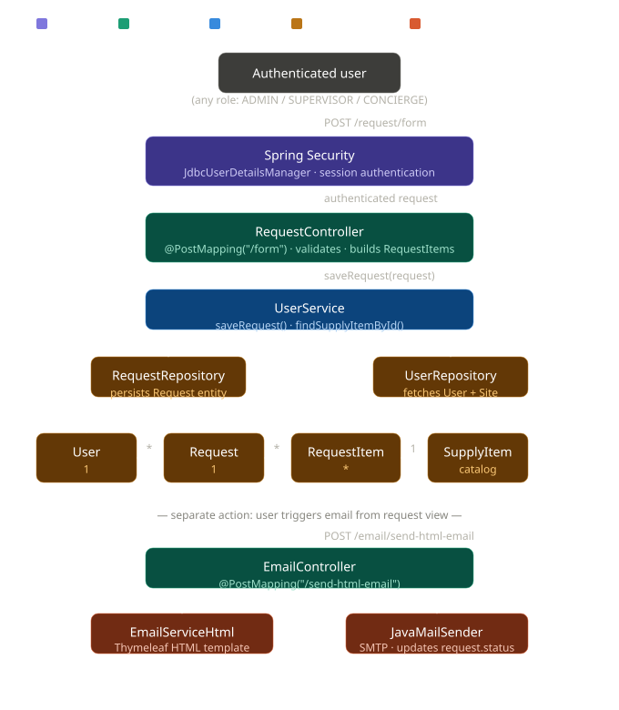

- Staff fills out a PDF or sends a WhatsApp message
- Supervisor approves (or forgets to)
- Order gets sent to the wrong supplier, or not at all
- Nobody knows what's in stock until it runs out
Why I built this
I spent years working in housekeeping. I watched firsthand how supply requests fell apart — someone filled out a PDF wrong, another person printed the wrong version, a supervisor approved something that was already out of stock. Nobody's fault really. Just a broken process held together with paper and memory.
When I started learning Spring Boot, I didn't have to look far for a problem to model. I already lived it. SupplyFlow is what happens when you understand a broken workflow from the inside and finally have the tools to start thinking through it.
The problem it solves
Before a system like this, a housekeeping team might manage supply requests like this:
SupplyFlow replaced that with a structured, role-based system where every request is tracked, every user has a defined role, and nothing moves without proper validation.
~90% fewer invalid submissions
Role-based access
Full request tracking
What I learned building it
Roles and Security
I knew I needed roles. What I didn't expect was how much complexity lives inside that simple idea. ADMIN, SUPERVISOR, CONCIERGE — each one sees a different version of the app. An admin manages users and generates invitation codes. A supervisor oversees requests. A concierge can only see their own profile and create requests.
I used Spring Security with
HttpSecurity
for route-level filtering and
@PreAuthorize
at the method level. Security isn't one layer — it's several working
together.
Admin
- Manages users
- Generates invite codes
- Full access
Supervisor
- Views all requests
- Approves or rejects
- No user management
Concierge
- Creates requests
- Views own profile
- Limited access
AuthenticationSuccessHandler Implementation
"After login, instead of redirecting everyone to the same page, I implemented a custom AuthenticationSuccessHandler that reads the user's role and sends them where they actually belong — a concierge lands on their own profile, an admin on the user list. Security and UX working together."
@Override
public void onAuthenticationSuccess(HttpServletRequest request, HttpServletResponse response,
Authentication authentication) throws IOException, ServletException {
String redirectURL = request.getContextPath();
var authorities = authentication.getAuthorities();
boolean isAdmin = authorities.stream().anyMatch(a -> a.getAuthority().equals("ROLE_ADMIN"));
boolean isSupervisor = authorities.stream().anyMatch(a -> a.getAuthority().equals("ROLE_SUPERVISOR"));
boolean isConcierge = authorities.stream().anyMatch(a -> a.getAuthority().equals("ROLE_CONCIERGE"));
if (isAdmin) {
redirectURL = "/user/list";
} else if (isSupervisor) {
redirectURL = "/user/list";
} else if (isConcierge) {
String email = authentication.getName();
User u = userService.findByEmail(email);
if (u != null && u.getIsActive() != null && u.getIsActive()) {
redirectURL = "/user/view/" + u.getId();
}
} else {
redirectURL = "/user/list";
}
response.sendRedirect(redirectURL);
}
The Invitation Code System
I designed this one myself. The problem: I needed a public registration endpoint, but only for people actually hired. My solution: an admin generates a unique code, shares it with the new employee, and registration only works with that code. But even after signing up, the employee can't log in until the admin assigns their role and links them to a supply company. Two gates, not one. It taught me that access control isn't just authentication, it's about whether a user is ready to exist in the system at all.
The code gets normalized (trimmed, uppercased) before lookup, marked as used after registration, and linked to the user who consumed it. It taught me about controlled workflows — not just "can this user log in" but "should this user exist at all."
Admin
- Manages users
- Generates invite codes
- Full access
The core implementation
"The invitation code is generated internally by an admin, then used on the public registration form to let a new employee in. Once consumed, the code is marked as used and linked to that user — making onboarding controlled and traceable. The whole operation is @Transactional, so if anything fails mid-process, nothing gets saved halfway."
@Override
@Transactional
public User registerWithInvitation(UserFormDTO form) {
String raw = form.getInvitationCode();
if (raw == null || raw.isBlank()) {
throw new IllegalArgumentException("Invitation code is required");
}
String codeStr = raw.trim().toUpperCase();
InvitationCode inv = codeDao.findByCode(codeStr);
if (inv == null)
throw new IllegalArgumentException("Invitation code not found");
if (Boolean.TRUE.equals(inv.getIsUsed()))
throw new IllegalStateException("Invitation code already used");
User user = loadOrCreate(form);
userMapper.applyScalarFields(user, form);
assignedRole(user, form);
userDao.save(user);
inv.setIsUsed(true);
inv.setIsUsedBy(user);
codeDao.save(inv);
return user;
}
DTO's and Mapper
Looking back, my DTOs are verbose. I had a separate one for the
form, another for the view, and another when I needed to load
related entities. That's actually the right approach, you don't want
your JPA entities traveling through HTTP requests but, writing every
constructor, every setter, and every null check by hand made it feel
messy fast. I also implemented the Builder Pattern manually a nested
inner class inside the DTO that chained setters and returned itself,
so I could build objects in one clean line. I liked how it read.
What I didn't know yet was that @Builder from Lombok generates
exactly that with one annotation. Writing it by hand first made me
actually understand what that annotation does under the hood. That's
the part Lombok fixed in StockFlow, the boilerplate disappears, but
now I know what's behind it.
@Builder
annotation replaced what used to be 40+ lines of boilerplate.
That contrast taught me something I couldn't have learned from a tutorial: you have to feel the pain of the problem before a solution really sticks.
public class UserViewDTO {
private Long id;
private String firstName;
private String lastName;
private String email;
private String phone;
private String password;
private Boolean isActive;
private Date createAt;
private AuthorityViewDTO roleAuthority;
private CustomerAccountViewDTO customerAccount;
private CustomerSiteViewDTO customerSite;
private List<RequestDTO> requests;
public Long getId() { return id; }
public void setId(Long id) { this.id = id; }
public String getFirstNameLabel() {
return (firstName == null || firstName.isBlank()) ? "No assigned" : firstName;
}
// ...
}
// Mapper for the user detail view
@Override
public UserViewDTO toDTO(User user) {
if (user == null) return null;
UserViewDTO dto = new UserViewDTO();
dto.setId(user.getId());
dto.setFirstName(user.getFirstName());
dto.setLastName(user.getLastName());
dto.setEmail(user.getEmail());
dto.setPhone(user.getPhone());
dto.setCreateAt(user.getCreateAt());
dto.setIsActive(user.getIsActive());
// Role (null-safe)
Role role = user.getRole();
if (role != null) {
AuthorityViewDTO auth = new AuthorityViewDTO();
auth.setId(role.getId());
auth.setRole(role.getAuthority());
dto.setAuthority(auth);
} else {
dto.setAuthority(null);
}
// Site (null-safe)
CustomerSite site = user.getAssignedSite();
if (site != null) {
CustomerSiteViewDTO s = new CustomerSiteViewDTO();
s.setId(site.getId());
s.setAddress(site.getAddress());
s.setCode(site.getExternalCode());
dto.setCustomerSite(s);
} else {
dto.setCustomerSite(null);
}
CustomerAccount cust = user.getAssignedCustomer();
if (cust != null) {
CustomerAccountViewDTO a = new CustomerAccountViewDTO();
a.setId(cust.getId());
a.setName(cust.getName());
a.setCode(cust.getExternalCode());
a.setEmail(cust.getEmail());
dto.setCustomerAccount(a);
} else {
dto.setCustomerAccount(null);
}
return dto;
}
JPA - Keeping it honest
Most of my database interactions used the basics —
save(),
findById(),
findByEmail(). Where it got more interesting was when I needed to pull data
across multiple joined tables; for those I used
@Query
and wrote the JPQL manually. It wasn't always pretty, but I
understood exactly what it was doing. That matters more to me than
using a feature I don't fully understand.
@Override
@Transactional(readOnly = true)
public Page<User> findAll(Pageable pageable) {
return userDao.findAll(pageable);
}
@Override
@Transactional(readOnly = true)
public User findOne(Long id) {
return userDao.findById(id).orElse(null);
}
@Override
@Transactional(readOnly = true)
public User findByEmail(String email) {
return userDao.findByEmail(email);
}
@Override
@Transactional(readOnly = true)
public User fetchByIdWithRequests(Long id) {
return userDao.fetchByIdWithRequests(id);
}
// Repository
@Query("select u from User u left join fetch u.requests r where u.id=?1")
public User fetchByIdWithRequests(Long id);
public User findByEmail(String email);
@Query("""
select distinct u from User u
left join fetch u.role
left join fetch u.assignedSite s
left join fetch s.customer
left join fetch u.requests r
""")
public List<User> fetchAllWithDetails();
Thymeleaf + jQuery AJAX + JavaMail
The frontend is server-side rendered with Thymeleaf, which means every page reload was a full round trip. I solved the clunky UX with jQuery AJAX for autocomplete and a few form interactions. It's not a React app. It's not a SPA. But it works, it's fast enough, and it taught me the difference between "page renders data" and "page reacts to data."
I also implemented native email delivery using JavaMail, when a
supply request is submitted, a confirmation is automatically sent to
the company's internal email address. No third-party service, no
abstraction layer. Just SMTP configuration, a
MimeMessage
built by hand, and Spring's
JavaMailSender
doing the work. It was the first time I connected a backend action
to something that lands in a real inbox.
Search
- AJAX autocomplete
- Live product lookup
- No page reload
Persist
- Items saved to DB
- Linked to request
- Tracked by status
Notify
- JavaMail triggered
- Sent to company inbox
- MimeMessage via SMTP
Architecture
I built this with a standard MVC structure — Controller, Service, Repository. It's what I was learning at the time, and honestly it was the right fit. One codebase, one database, everything in one place. I didn't need anything more complex than that for what this app does. I've since heard the word "microservices" a lot. I don't have experience with them yet, but I understand now why structure matters and, that's something I want to keep learning.
The lesson I carry forward: match your architecture to your problem, not to what sounds impressive.
Architecture

What I'd do differently
- Lombok from the start. The hand-built DTOs were a good learning exercise, but in a team or production context, that's unnecessary friction.
- More test coverage. I validated everything manually with the UI. A proper test suite would have caught more edge cases faster.
- Email integration. It's listed as a future improvement. The idea was to send order confirmations via Gmail API. That's still on the list.
- JWT. JWT authentication. Right now the app uses Spring Security's session-based login, which works. But I'd like to revisit this and implement JWT — not because sessions are wrong, but because I want to understand the difference from the inside.
- Filters - search bar. Better filtering. SupplyFlow has no search bar. You scroll through the list and hope it's short. I've since built filtering in StockFlow using Spring Specifications, and going back to SupplyFlow without it feels obvious now. That's probably the clearest sign of growth, when your old project starts to bother you.
The bigger picture
The hardest part isn't the code. It's understanding the problem well enough to know what to build.
SupplyFlow · Built with Spring Boot · A real workflow, solved from the inside.